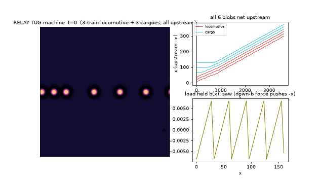
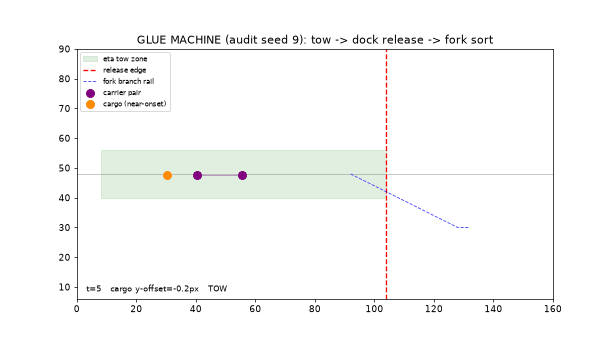
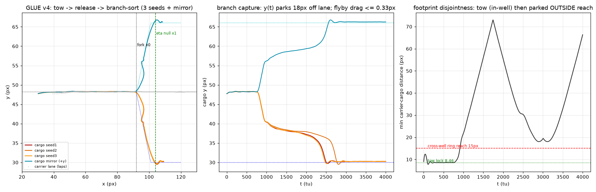

A machine needs an opponent: a load field the cargo will not climb by itself. The trick that makes this clean is zero-footprint forcing ("isok" mode): shift (k₁, k₄) together along the iso-background line as a static function of position, b(x). The vacuum state stays an exact fixed point everywhere (checked to 1e−16) — the landscape is invisible until a blob shows up, and then it feels a force pushing it "downhill" toward lower b. A sawtooth b(x) (5 teeth, period 32, gentle rise + sharp cliff) makes a periodic track where downstream = down the long rising ramps.
The machine, assembled entirely from certified parts:
| part | made of | function |
|---|---|---|
| locomotive | 3-blob wake-locked train (M4), τ=5.70 | self-propulsion c≈0.06–0.09, strong enough to climb (a pair is NOT: it reverses on any tested tooth — measured, hence 3 blobs minimum, climb margin 1.53×) |
| track | isok sawtooth b(x), ε=5·10⁻⁴ | the adversary: every parked blob slides downstream into a trough and stays |
| parking brake | pair-only zone (M4) | lone cargo cannot move itself — it waits exactly where it parked |
| rails | static y-channel: bchan(y)=0.002·min(|y−y₀|, 24) | a shallow zero-footprint valley in the cross direction keeping the train on axis (without rails the growing train buckles into the trough valley after 1–2 pickups — the certified failure of machine v1) |
| coupler | M2/M4 wake shells | head-on pickup: cargo locks into the leader's front shell at 14.9 px and becomes the new leader — a pusher-tug; train speed grows per pickup (0.059 → 0.073 → 0.085) |

Two emergent bonuses, neither designed: at the 6-train power ceiling the machine sheds its rear blob, which slides back, parks at a trough (pair-only zone again), and is re-collected on the next lap — a self-healing relay. And because pickup happens by wake capture, the machine needs no controller at all after t=0: one initial kick, then pure autonomous physics for as long as we watched.
The factory searcher added one legalism with big consequences: the cross-species coupling η can be a static field η(x,y) — it enters the v-equations exactly the way isok enters u, so the vacuum stays exact and "where blobs can grip each other" becomes geography. That gives three certified primitives and one composed machine:
| primitive | result | the law it produced |
|---|---|---|
| tow | a traveling pair carries a cargo blob locked in its wake well (155 px conveyed at full pair speed) | near-onset cargo law: deep-static cargo (τ₂=2.5) is untowable — any coupling strong enough to grip it destabilizes something (the well ceiling is 0.017, below every stable carrier speed; mutual-η carriers replicate). Cargo parked in the rotor-only zone (τ₂=5.60) still self-parks, but its well response is 7–8× amplified (near-onset susceptibility — M5's adversary physics turned into the coupling): it locks at 8.46 and tows at full speed. One dial switches cargo between inert freight and towable. η=0.1 tows / 0.05 drops. |
| unload dock | an η→0 null zone (vacuum-exact) releases the towed cargo: 6.5–7.5 px glide past the edge, then frozen ≤0.3 px/500 tu; carrier continues. 3/3 seeds + carry-control (held 149 px) + null-control (1.15 px) | release needs no unbinding physics — switch off the grip in space, not in time. The missing "delivery" primitive from M5, solved by coupling geography. |
| species fork | per-species rails sort mixed arrivals 24/24 (3 seeds + mirrored geometry), null clean | bonus dial: timescale asymmetry (M slides at 0.074 px/tu, S at 0.0047) — speed sorting even without species rails. |


Scaling the glue machine from one cargo to a queue of three produced a genuinely new machine and three new laws that stopped it short of full certification — the most instructive outcome so far.
The machine that works (certified 3/3 seeds + fresh-seed audit): on a railed lane, a carrier meeting cargo head-on doesn't swing around it (rails forbid the factory's swing-around geometry) — at moderate grip the meet becomes a stable push-capture "blade": the cargo rides 7 px ahead of the carrier at full speed. So sequential one-at-a-time service is impossible on rails; the only throughput machine is a bulldozer convoy — the carrier sweeps the whole queue into a chain and delivers it wholesale. One trick makes the convoy sortable: a sacrificial plug blob rides the blade slot (which can never be fork-sorted — its y-hold is weaker than the fork needs, with 4 distinct trap limit-cycles mapped), so the chain-pushed real cargoes sort cleanly behind it: all 3 delivered to the branch floor as a bond-shell stack (15.3–15.5 px spacing), blob count frozen, cycle time 215 tu.
The law cascade that blocked the full gate: the delivered 3-stack is itself a bonded structure — and per M4 physics, bonded structures near onset travel. The parked stack shuttles ±9 px (isolation control: intrinsic). Fixing it means colder cargo (τ₂ < τ_c(3) ∈ (5.55, 5.60]) — but colder cargo compresses the blade gap below its ~5.4 px split floor at working speed (blade-load law), and slowing the convoy to protect the blade makes the blade contact transversely unstable (slow-convoy buckling, the M5 buckling generalized). For a 3-cargo convoy the window is empty in this architecture. Stack-safety, blade-load, and buckling are now quantified design laws — machine engineering in this physics is navigating a lattice of competing stability windows, exactly the kind of hidden-law structure the eventual agent-facing world wants.
The convoy line's three blocking laws (stack-safety, blade-load, buckling) were turned into search queries, and the equation-space atlas answered all three — see post 7 for the harvest. The v3 parts list: a 3-field engine carrier at c = 0.20–0.30 (2–5× blade-load margin), plateau-bonded cargo stacks that park motionless under noise (the stack-safety fix), and two candidate 3-species worlds with clean cross-bonds for species-tagged rails. Separately, a closed-loop recirculation test (cargo gripped → towed → released → re-gripped over multiple carrier laps) and the first machine with an L1-grown component are in progress. This section will be updated when v3 certifies.